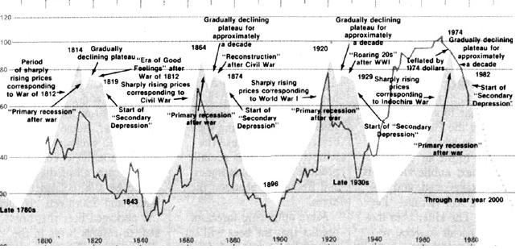

It's been a few years since the writing of MOTHER's founder, John Shuttleworth, graced these pages. Therefore, we're pleased-as we're sure all longtime subscribers in our audience will be-to welcome Ol' John's analysis of the factors behind today's often confusing economic developments . . . and his perceptive thoughts concerning just where we may be headed!
Many of you will remember that as far back as issue 44 (March/April 1977), this column has explored and quoted from the 1920s work of Russian economist Nikolai D. Kondratieff. Particularly as interpreted by Julian M. Snyder, editor and publisher of International Moneyline ($282 a year from 25 Broad St., New York, NY 10004). The fact that Nikolai the K died at communist hands in a Siberian prison because he preferred to quote the results of his research rather than spout the official party line only adds to his reputation. As does the following report . . . largely based upon the May 21 and November 26, 1984, issues of International Moneyline.
Kondratieff discovered very quickly that since the start of the Industrial Revolution, Western economies had expanded and contracted in a roughly 54-year-long wave . . . with approximately 27 years of expansion and 27 of contraction in each cycle. Now, these 27 years of "up" followed by 27 years of "down" economic activity are not always regular enough to set your calendar by. But if you'll plot commodities all the way back to English agricultural prices in 1260, the way Nikolai did, you'll find his theory holds up amazingly well. Recent expansions have climaxed with commodity prices topping out in 1814, 1866, and 1920 . . . followed by sharp "primary recessions" and then eight- or ten-year "plateau periods" of unstable and deteriorating prosperity that, finally, ended in crashes and financial panics.
Most recently of all, we witnessed a commodity price explosion in 1974, accompanied by the 1974-1975 recession . . . trailed by the usual plateau period which, even now, threatens to fall apart into one stem-winder of along wave downswing. It should be carefully noted, however, that the coming collapse (assuming that Kondratieff will once again be proven right) will not necessarily be a replay of the 1930s Great Depression.
Julian Snyder is a good friend of Massachusetts Institute of Technology Professor Jay W. Forrester-another Kondratieff student-and, in recent months, has quoted the good professor extensively. According to both Forrester and Snyder, the last expansion phase of Western society ran from 1945 to a peak in 1974 . . . before plunging into the sharp 1974-1975 recession. During the plateau period that followed, business-as we all know-was fundamentally tired, credit became increasingly overextended, and economic activity in general was sluggish. At the same time, however (especially during 1984), the forces of inflation wound down . . . and we've all enjoyed rising purchasing power without the pain of higher prices.
Forrester's MIT studies indicate that the 1981-1982 recession (the worst downturn since the Great Depression of the '30s) was the first leg of the approaching downswing. "What lies ahead," says Julian Snyder, "is another Great Depression that will color your life until the end of the century. However, it will not likely be a reprise of the thirties."
The Great Depression of the 1930s was an extreme . . . a single sharp downturn followed by a long depression. "In contrast," says Forrester, "there was no single cataclysmic collapse during the long wave downturn of the 1870s through the 1890s. Between 1873 and 1897 there were three great depressions in the U.S., each of which was one-quarter to one-half as severe as the Great Depression of the 1930s."
Which is more or less what Forrester and Snyder project for the rest of this century: a slow, saw-toothed, and declining series of recessions/depressions as bad as, or worse than, the 1981-1982 slump-with the bottom of each decline lower than that of the one before and each recovery peaking below the top of the last upturn. In short, the next 15 years will probably see increasingly long and deep periods of tough sledding . . . but it's unlikely that you'll ever experience the kind of misery that struck folks in the 1930s.
Professor Forrester explains: "A depression occurs when long-term growth trends of the past cannot be sustained. When the trends falter, a powerful reversal follows. Many imbalances have been built up. These will be relieved through continuing turbulent economic crosscurrents for the next 10 or 15 years. For at least a decade, we should expect a continuation of weak business cycle recoveries and severe downturns. Each unemployment peak will exceed the previous one, as they have since 1965, until our economies readjust."
Or-to put it another way-when times are good and business is on the upswing, a steadily increasing number of business people, farmers, shop owners, manufacturers, poli ticians, economists, and consumers begin to think the Good Times have moved in forever. And, naturally enough, more and more folks figure that they'll just cash in on the rising tide of prosperity and affluence that they see all around them. And day by day, week by week, and month by month they tap their savings here and float a loan there to invest in new production tools, new and remodeled stores and shopping centers, new farming equipment, new housing developments, new everything in an effort to "get in while the gettin's good."
Now, all this activity-slowly at first, then faster and faster-begins to bid up the price of wages, interest, commodities . . . all sorts of goods and services. Business is expanding and most individuals can see no end in sight. The fever feeds upon itself and everyone gets more and more euphoric. Spirits are high and climbing. You can feel the optimism. The future is bright and getting brighter.
"Hey!" say tens of thousands of farmers, manufacturers, contractors, and business people. "Prices are up and I've still got more orders than I can handle. I'm going to borrow some money and buy a new tractor . . . six more milling machines . . . a bigger truck . . . more display cases. I'm going to hire more help, too! There's money to be made out there, and I'm going to get my share!"
And so the expansion feeds upon itself. Bigger and bigger and faster and faster. Until, seemingly all of a sudden, the economy is awash in more equipment, houses, factories, cars, and shopping centers than it knows what to do with. All financed on easy credit far into the future.
Which means that just when industry has gotten itself all tooled up to really crank out tremendous quantities of shiny new bulldozers and pickups and lathes and vacuum cleaners and steel I-beams and everything else . . . the marketplace is beginning to say, "Jeeze. I don't know. I haven't paid for that last stuff yet. And the way things are going, I don't know how long it's going to take to settle the bills I've already run up. I'd better just hold off for a while and see how things turn out."
And, of course, as more and more glove manufacturers and tool and die shops and asparagus growers and hardware stores and greenhouses and doctors and dentists "hold off for a while to see how things turn out" . . . "things" begin to turn out slower than expected. Sales of refrigerators and disc harrows and band saws and motorcycles and shoes and hunting rifles and cement and lumber and window frames and water heaters and copper wire are disappointing. And a manufacturer here shuts down a marginal assembly line and another over there cuts back his work force and a third down in Georgia or up in Maine or over in Michigan padlocks an entire factory.
"Finally," says Forrester, "the overexpansion of capital plant is ended by a depression during which excess capital plant is physically worn out and is financially depreciated on the account books until the economic stage has been cleared for a new era of rebuilding."
"Current economic trends have been developing steadily for 20 years," Forrester explains, regardless of the party in power or the economic ideology that prevails. He notes that manufacturing overcapacity has been growing continuously since at least the mid-'60s. As Forrester puts it, "Contrary to recent proposals in Washington, the country has too much capacity, not too little. [EDITOR'S NOTE: The same thing could be said for the whole industrialized world.] Policies to encourage investment now have low leverage because, in most industries, there is little economic incentive to make new capital investment."
How right he is! In 1965, industrial America realized a 20% or better return on the investments it made in new plants and machinery. By 1980, that return had dropped to just over 10%. Why? Simple. The economy was notably larger in 1980 than it was in 1965 . . . but the number of factories and tools and services set up to supply and support that expanded economic activity had increased even more. And with substantially more drill presses and Redi-Mix trucks and jobbers and chain stores competing for only a somewhat bigger market, deals and point shaving and "Look, I want your business so I tell you what I'll do . . ." quite naturally chipped away at those returns on investment. Until, by 1980, they were only about half the size they'd been in 1965.
Which wouldn't necessarily be too hard to take. Except for the fact that all those bills we've run up since 1965 are coming due with interest . . . just at the time we've got less and less money coming in to pay them off.
Son of a gun. And if you think that's a pretty poor testimonial for Capitalism At Work, consider this: The whole communistic world, proportionally speaking, is in even bigger hock to the capitalistic nations these days and is skating around the edge of an even bigger financial fiasco. We've all been living beyond our means for years, and a terrible day of reckoning is fast approaching. We can only hope that Forrester and Snyder are right and that we'll all be served the coming Greatest Of All Depressions in a number of small and easy-to-digest "bites."
Studies of the Kondratieff economic long wave show that an agricultural depression is a consistent harbinger of a secondary depression in the general economy. And you know you've been hearing about an agricultural depression in this country. As you'll recall, American farmers entered 1985 facing their fourth year of falling prices and deteriorating land values. According to the Federal Reserve Bank of Chicago, the slump in farm acreage prices (which started in 1981) was still accelerating at the turn of the year and the Kansas City Fed looked for the trend to continue throughout 1985.
Which means, since farmers have used their land as collateral to borrow working capital against, the 4,200 or so "farm banks" which have made those loans are also feeling the pinch. Sometimes for the first time ever. A good example was the third-quarter 1984 loss reported by the Minneapolis-based Norwest Corporation, the nation's sixteenth largest bank holding company . . . its first red ink since incorporation in January 1929. Norwest, which owns 82 banks in the Midwest, charged off $49.5 million in bad loans, mostly to farmers in Minnesota, Iowa, the Dakotas, Nebraska, Montana, and Wisconsin.
"There are lots of young farmers who bought land at inflated prices now trying to make their payments in deflated dollars," say the bankers involved. "And it's not going to get any better unless the price of grain goes up." Some of the older bankers in the area state that conditions are worse now than they were in the '30s.
As Professor Forrester points out, "For two decades land has been seen as an inflation hedge . . . that is, the price of land was rising faster than inflation." So people, spurred on by a liberal monetary policy that made loans easy to get, rushed to buy land to protect themselves. Which further fueled the land boom.
But, of course, the price of anything-even land-cannot continue rising faster than general price levels forever. Forrester notes that over time "the imbalance has become so great that in some areas the interest payment on the land purchase has reached several times the agricultural rental value of the land."
And, children, if the rental value can't be raised (and, thanks to currently low grain prices, it can't), what do you suppose has to happen? That's right. No one will want to commit his or her resources to a sure moneyloser, there will be no buyers for all those overpriced farms that the banks are foreclosing, and that $3,000-an-acre land has already started to crash down to $2,000 or $1,500 or $800 an acre again. Or whatever price it takes to make the rental on that land cover the interest payments once more . . . and generate a little profit besides.
Which is precisely what is happening right now. And history tells us that once land prices crash . . . the rest of society cannot be far behind. Pray for a rerun of the late 1800s, and not the 1930s. - John Shuttleworth
|
 U.S. Wholesale Prices |
|
|